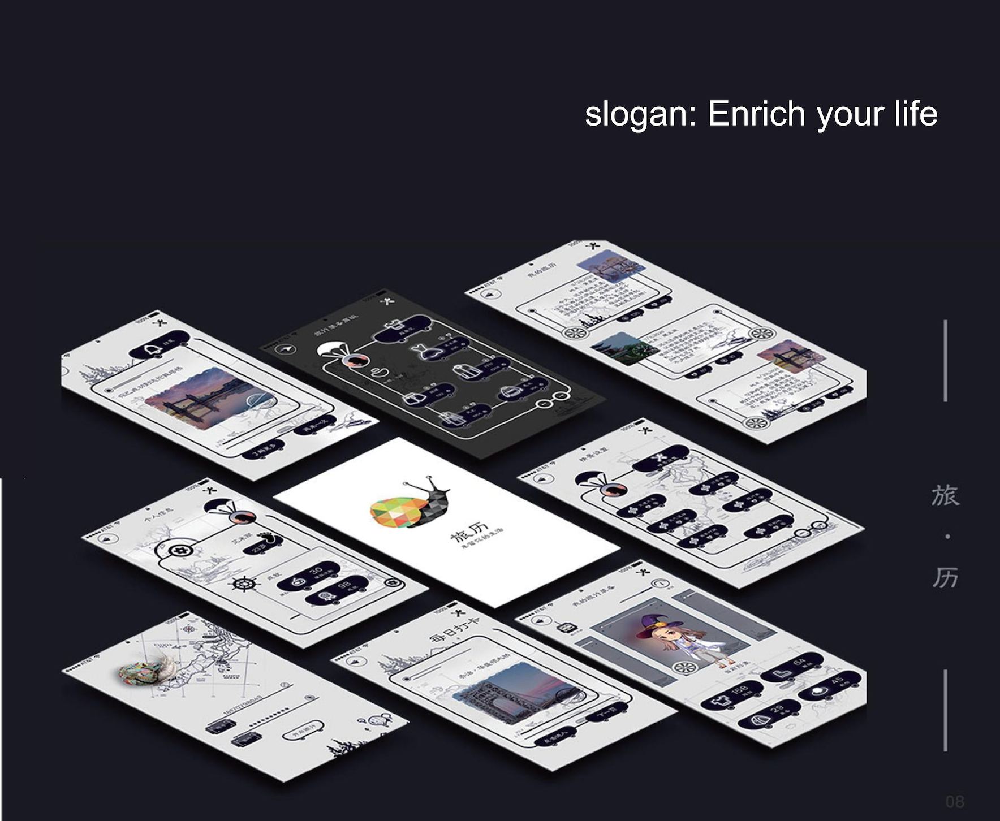
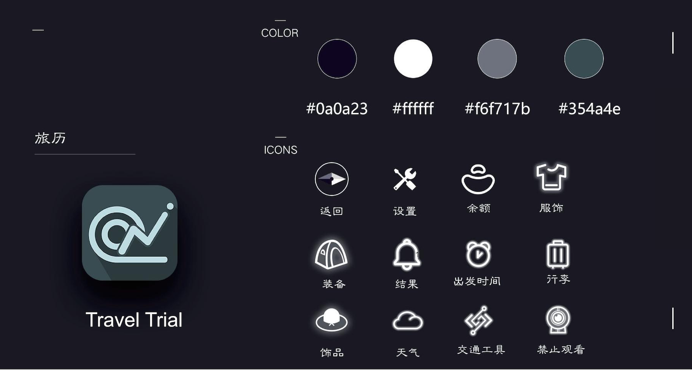

Mobile App UI/UX · 2020
Travel Trial
September–November 2020
Travel Trial is a simulated travel app that allows users to experience a virtual journey without leaving home.
Through a fresh and elegant interface, users can explore different destinations, discover regional cultures and customs, take augmented-reality photographs, and enjoy a relaxing travel experience.
The project aims to make virtual travel both informative and enjoyable while encouraging users to build knowledge and inspiration for future real-world journeys.

